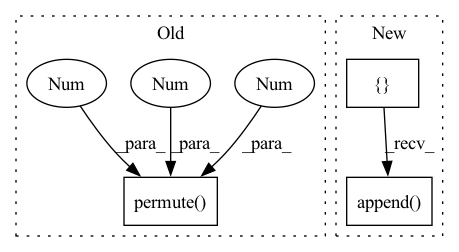

Pattern ID :34713

Before Change
def _merge_results(self, current_state: List[Tensor]) -> Tensor:
mb_feats = torch.stack(current_state, dim=1)
(batch_size, num_f, num_steps, num_feats) = mb_feats.size()
mb_feats = mb_feats.permute(0, 2, 1, 3)
mb_feats = mb_feats.reshape(batch_size, num_steps * num_f, num_feats)
return mb_feats
def _run_regressor(self, mb_feats: Tensor) -> Tensor:
After Change
f_even = f_even.permute(1, 0, 2)
f_odd = f_odd.permute(1, 0, 2)
mlen = min((f_even.shape[0], f_odd.shape[0]))
_ = []
for i in range(mlen):
_.append(f_even[i].unsqueeze(0))
_.append(f_odd[i].unsqueeze(0))
if f_even.shape[0] > f_odd.shape[0]:
_.append(f_even[-1].unsqueeze(0))
return torch.cat(_, 0).permute(1, 0, 2)
def _run_regressor(self, mb_feats: Tensor) -> Tensor:
mb_feats = mb_feats.permute(0, 2, 1)
In pattern: SUPERPATTERN
Frequency: 3
Non-data size: 3
Instances
Fragment ID: 99589743
Project Name: takuyashintate/tsts
Commit Name: b03ce0665b1764d80b4f1f5ef041af8375521f50
Time: 2022-03-29
Author: kmdbn2hs@gmail.com
File Name: tsts/models/scinet.py
M Class Name: SCINet
N Class Name: SCINet
M Method Name: _merge_results(3)
N Method Name: _merge_results(2)
M Parent Class: Module
N Parent Class: Module
M File Name: tsts/models/scinet.py
N File Name: tsts/models/scinet.py
M Start Line: 209
M End Line: 214
N Start Line: 210
N End Line: 224
'>
Before Change
reproTool = reproTools[dataset_name]
num_cameras = imgs_orig.shape[0]
imgs = torch.from_numpy(imgs_orig).cuda().float().permute(0,3,1,2)
points3D_net = jarvisPredictor(imgs, reproTool.cameraMatrices.cuda(), reproTool.intrinsicMatrices.cuda(), reproTool.distortionCoefficients.cuda())
if points3D_net != None:
After Change
pointsNet = []
pointsGT = []
filenames = []
data_generator = DataLoader(
dataset,
batch_size = 1,
shuffle = False,
num_workers = cfg.DATALOADER_NUM_WORKERS,
pin_memory = True)
for item, sample in enumerate(tqdm(data_generator)):
if progress_bar != None:
progress_bar.progress(float(item+1)/len(dataset.image_ids))
keypoints3D = sample[1][0].numpy()
imgs_orig = sample[0][0]
img_size = imgs_orig[0].shape
num_cameras = imgs_orig.shape[0]
dataset_name = sample[-2][0]
reproTool = reproTools[dataset_name]
file_name = sample[-1][0]
imgs = imgs_orig.cuda().float().permute(0,3,1,2)
points3D_net = jarvisPredictor(imgs,
reproTool.cameraMatrices.cuda(),
reproTool.intrinsicMatrices.cuda(),
reproTool.distortionCoefficients.cuda())
if points3D_net != None:
points3D_net = points3D_net[0].cpu().detach().numpy()
pointsNet.append(points3D_net)
pointsGT.append(keypoints3D)
filenames.append(file_name)
print (f"{CLIColors.OKGREEN}Successfully analysed all validation "
f"frames!{CLIColors.ENDC}")
if len(pointsNet) != len(dataset.image_ids):
'>
Fragment ID: 99589739
Project Name: jarvis-mocap/jarvis-hybridnet
Commit Name: 327b43a36cc8aa4995c6e50842b02f3577a1e241
Time: 2022-04-28
Author: jarvismocap@gmail.com
File Name: jarvis/analysis/analyze.py
M Class Name: AnonimousClass
N Class Name: AnonimousClass
M Method Name: analyze_validation_data(5)
N Method Name: analyze_validation_data(5)
M Parent Class:
N Parent Class:
M File Name: jarvis/analysis/analyze.py
N File Name: jarvis/analysis/analyze.py
M Start Line: 28
M End Line: 52
N Start Line: 22
N End Line: 82
'>
Before Change
inpainted_image = self.model(image, mask)
cur_res = inpainted_image[0].permute(1, 2, 0).detach().cpu().numpy()
cur_res = cur_res[0:origin_height, 0:origin_width, :]
cur_res = np.clip(cur_res * 255, 0, 255).astype("uint8")
cur_res = cv2.cvtColor(cur_res, cv2.COLOR_BGR2RGB)
After Change
print("Trigger crop image")
boxes = boxes_from_mask(mask)
crop_result = []
for box in boxes:
crop_image, crop_box = self._run_box(image, mask, box)
crop_result.append((crop_image, crop_box))
image = (image.transpose(1, 2, 0) * 255).astype(np.uint8)[:, :, ::-1]
for crop_image, crop_box in crop_result:
x1, y1, x2, y2 = crop_box
'>
Fragment ID: 99589696
Project Name: sanster/lama-cleaner
Commit Name: 43c9c22c7312dd39feac4e3783e9ec080fd64243
Time: 2022-03-22
Author: cwq1913@gmail.com
File Name: lama_cleaner/lama/__init__.py
M Class Name: LaMa
N Class Name: LaMa
M Method Name: __call__(3)
N Method Name: __call__(3)
M Parent Class:
N Parent Class:
M File Name: lama_cleaner/lama/__init__.py
N File Name: lama_cleaner/lama/__init__.py
M Start Line: 40
M End Line: 55
N Start Line: 50
N End Line: 65